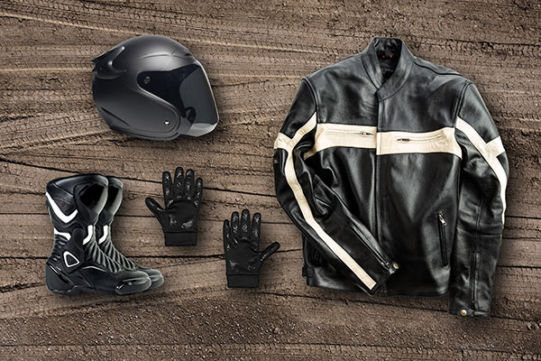

Safety Gear
When it comes to riding a motorcycle, safety gear is essential. Here are some of the most important pieces of gear to consider:

- Helmet
- Jacket
- Leather or textile jackets with armor are ideal for protection.
- Look for jackets with ventilation for hot weather.
- Pants
- Motorcycle pants with armor or reinforced areas are recommended.
- Consider wearing riding jeans for a more casual look.
- Gloves
- Boots
- Eye Protection
- Extra eye protection is needed if your helmet does not come with a face shield.
- Reflective Gear
- Rain Gear
- If you are riding in the rain, be sure to wear waterproof gear to keep you dry.